Dati radaristici pervenuti all'Autorità Giudiziaria
Luogo comune: tutti i dati radaristici prodotti la sera della strage dai centri radar della D.A. sono stati consegnati all'A.G.
Motivazione: questo luogo comune viene sempre collegato al fatto che la sera della strage non sarebbe accaduto niente d'insolito nei cieli italiani e, quindi, non ci sarebbe niente da nascondere. Dunque, non ci sarebbe stata alcuna ragione per non consegnare tali dati con completezza e tutti nella loro interezza.
Il giudice istruttore Priore, nella sua Ordinanza di rinvio a giudizio - Sentenza istruttoria di proscioglimento, riporta con dovizia di particolari tutto ciò che l'A.G. riesce a trovare nei vari centri radar della D.A. e tutto ciò che, invece, non viene rinvenuto.
Sebbene questo dettagliato elenco sia presente dall’agosto del 1999 (data di emissione dell’O-S), c’è chi ancora sembra avere le idee confuse su ciò che l’A.G. ha effettivamente rinvenuto.
Lo scopo di questa pagina è chiarire come stanno veramente le cose.
INDICE
Organizzazione dei centri radar
Al fine di comprendere meglio i contenuti trattati in questa pagina, nel presente paragrafo vengono fornite alcune informazioni di base sull'organizzazione dei centri radar della D.A. Tali informazioni sono tratte in massima parte dal documento "WP002020_001.DOC" fonte da pag. 25.
La cartina mostra l'ubicazione dei centri radar, i collegamenti tra di essi e la rotta seguita dall'IH870 (in rosso).
I cerchi tratteggiati rappresentano la copertura approssimativa.
I compiti assegnati ad un centro radar sono:
- assicurare la sorveglianza dello spazio aereo (v. definizione poco più sotto) in tutta l'area coperta dal radar;
- effettuare l'identificazione di tutto il traffico aereo in transito nell'area di responsabilità del centro radar;
- fornire informazioni agli enti superiori ed adiacenti circa la situazione aerea e l'impiego delle armi;
- esercitare il controllo tattico degli intercettori;
- fornire assistenza alla navigazione aerea ed alle missioni offensive;
- concorrere alle operazioni di soccorso.
Per ogni centro radar è definita la TPA, che è la porzione di spazio aereo assegnata all'unità radar ai fini dell'assolvimento dei compiti relativi a: inizializzazione, numerazione, identificazione, tracciamento e riporto delle tracce agli altri centri. All'interno della propria TPA, quindi, un centro radar ha la responsabilità di:
- associare un'adeguata simbologia (traccia) ad ogni eco radar correlabile con oggetti in movimento;
- attribuire a ciascuna traccia un numero distintivo;
- individuare l'identità e le caratteristiche cinematiche di tali eco (quota, velocità, direzione, ecc).
Importanti eccezioni a quanto appena detto esistono in presenza di Free Plot Area.
La sorveglianza aerea è la sistematica osservazione di un definito volume di spazio aereo mediante mezzi elettronici ed è limitata esclusivamente dalla capacità di copertura dei radar. Ciò significa che i limiti stabiliti per le TPA non si applicano alla sorveglianza aerea, che deve essere svolta per 360 gradi alla massima portata del radar.
Il capo controllore (M.C.) coordina e dirige le attività ed è responsabile di fronte al comandante della condotta di tutte le operazioni di D.A. che si svolgono in sala operativa. Ha la delega di ordinare o meno il decollo dei velivoli intercettori in caso di necessità operativa ed ha al suo fianco l'assegnatore di intercettori (F.A.).
La sala operativa è organizzata in tre sezioni:
- sezione armi;
- sezione sorveglianza;
- sezione addetti all'elaboratore elettronico.
Della sezione armi fanno parte gli operatori guida caccia, che hanno il compito di guidare i velivoli intercettori verso il velivolo da intercettare.
La sezione sorveglianza svolge il compito di scoperta, identificazione ed inseguimento degli aeromobili. Fanno parte di questa sezione:
- il supervisore (T.P.O.) controlla e coordina il lavoro della sezione, svolge normalmente anche il compito di sorveglianza generale dello spazio aereo;
- l'assistente del T.P.O. (T.P.O./A);
- l'identificatore (I.O.) provvede alle azioni necessarie all'identificazione dei velivoli;
- l'inizializzatore (I.N.) è responsabile della scoperta della traccia e del suo inserimento nel sistema (inizializzazione della traccia);
- il tracciatore (T.K.M.) controlla l'inseguimento automatico delle tracce locali (cioè di quelle all'interno della TPA del centro radar) e, all'occorrenza, effettua il tracciamento manuale;
- l'addetto allo scambio dati con i reparti superiori limitrofi (T.K.X.) cura e controlla la trasmissione e ricezione automatica dei dati relativi al traffico aereo che interessa l'area di competenza del centro radar.
In caso di esercitazione era presente anche la figura del controllore di esercitazione (E.C.).
La sezione addetti all'elaboratore elettronico cura il funzionamento operativo del computer. Il M.I.O. carica il programma da far eseguire al computer, inserisce i nastri necessari per le esercitazioni simulate (SYNADEX) ed effettua le riduzioni dati.
Di fatto, la sala operativa può funzionare con molte meno persone che assumono su di sé più funzioni. Tutte le console sono intercambiabili, cioè possono
svolgere tutte le funzioni. Ad esempio, per abilitare una console alla funzione di T.K.X. bisogna inserire un'apposita mascherina da T.K.X. ed eseguire una serie di operazioni che abilitano la console a funzionare come T.K.X.
I centri radar italiani erano connessi tra loro e con quelli limitrofi delle nazioni NATO tramite ponte radio o linea telefonica per formare un sistema integrato di superficie per la difesa aerea (NADGE) che si estendeva per tutta l'Europa, dalla Norvegia alla Turchia.
Un centro NADGE:
- consente, per quanto attiene alla sorveglianza, di rappresentare e aggiornare la situazione aerea in tempo reale;
- permette la registrazione automatica su nastro della suddetta situazione;
- fornisce, mediante l'elaborazione automatica di dati e la loro rappresentazione visiva, adeguata assistenza nella guida degli intercettori pilotati.
Decreti di sequestro iniziali
L'oggetto dei decreti di sequestro che interessano in questa sede (cioè i dati radaristici) erano costituiti da nastri magnetici e tabulati cartacei.
I nastri venivano utilizzati nei centri radar che funzionavano in modalità automatica o semiautomatica. Questi centri avevano un computer di tracciamento che poteva inizializzare automaticamente (cioè senza l'intervento dell'operatore) le tracce associabili a velivoli. Una volta inizializzata la traccia, il computer poteva seguirla automaticamente (cioè senza l'intervento dell'operatore) aggiornandone la posizione e i dati di volo.
In base alle dichiarazioni rese da alcuni controllori della D.A., risulterebbe che la modalità automatica non fosse mai usata o fosse usata molto raramente, poiché lo schermo tendeva a riempirsi di falsi bersagli generati dal rumore di fondo (orografia, fenomeni meteo, grosse navi, ecc), sovraccaricando il computer di tracciamento, che all'epoca aveva capacità molto limitate. Così l'inizializzazione delle tracce era demandata all'operatore, mentre il tracciamento era lasciato al computer. In altre parole, i centri radar funzionavano quasi sempre in modalità semiautomatica.
Su nastro venivano registrate moltissime informazioni, sia relative alle tracce che alle azioni compiute dall'operatore alla console e tutte queste informazioni potevano essere stampate su carta, qualora venisse richiesto.
Per evitare un enorme spreco di nastri, vigevano specifiche disposizioni che prescrivevano di smagnetizzare i nastri (per cancellarli) e di riutilizzarli dopo 30 giorni dall'ultima registrazione, salvo diverse disposizioni.
I centri radar più obsoleti non possedevano un registratore a nastro magnetico come quello presente nei siti automatici o semiautomatici, per cui i plot venivano registrati su di un apposito modello cartaceo chiamato DA-1.
Questo modello era utilizzato anche nei centri radar dotati di nastri magnetici quando il sistema di registrazione non era operativo (manutenzione, malfunzionamento, ecc). Nei centri che funzionavano in modalità fonetico-manuale, invece, il DA-1 era l'unico mezzo per registrare e preservare le tracce avvistate.
Nei centri di tipo fonetico-manuale, uno o più operatori (detti lettori) erano addetti alla lettura sui monitor delle tracce di qualsiasi velivolo militare o civile. Essi comunicavano per interfono i dati radaristici ad altri operatori (detti marcatori), che provvedevano a riportarli su tabellone di plexiglass con gessi vetrografici, indicando: posizione, direzione, velocità e nominativo delle tracce. Parallelamente, ancora altri operatori trascrivevano gli stessi dati sul DA-1.
Il Sostituto Procuratore Guarino, della Procura della Repubblica di Palermo, si muove con esemplare sollecitudine, mettendo in essere molteplici attività già a partire dal 28 giugno.
Il primo decreto di sequestro delle registrazioni radar viene emesso sabato 5 luglio 1980 (v. "WP000132_001.DOC"
fonte):
PROCURA DELLA REPUBBLICA DI PALERMO
IL P.M.
VISTI GLI ATTI RELATIVI AL DISASTRO AEREO DC9 VOLO ITAVIA IH-870 DEL 27.06.80;
RILEVATO CHE OCCORRE ACQUISIRE AGLI ATTI PROCESSUALI LE REGISTRAZIONI DELLE
INTERCETTAZIONI DEI RADAR MILITARI COMUNQUE OPERANTI SUL MAR TIRRENO NELLA NOTTE
TRA VENERDI' 27.06.80 E SABATO 28.06.80, TRA LE ORE 20,00 E LE ORE 23,15;
VISTO L'ART. 342 C.P.P.
DISPONE
CHE LE REGISTRAZIONI PREDETTE SIANO IMMEDIATAMENTE CONSEGNATE DA CHIUNQUE LE
DETENGA E DOVUNQUE SI TROVINO, ALL'UFFICIALE DI P.G. ALL'UOPO INCARICATO;
DELEGA PER L'ESECUIONE IL COMANDANE DEL GRUPPO C.C. DI PALERMO, CONFERENDOGLI LA
FACOLTA' DI PROCEDERE ALL'INCOMBENTE ANCHE A MEZZO DI ALTRO UFFICIALE DI P.G. DA
LUI STESSO INCARICATO.
PALERMO, LI' 05.07.80
IL SOST. PROC. DELLA REPUBBLICA
DOTT. ALDO GUARINO
L'A.G. inizierà ben presto a rendersi conto delle difficoltà che si troverà ad affrontare durante l'espletamento delle sue attività.
Infatti, il lunedì seguente, il comandante del Gruppo Carabinieri di Palermo comunica la delega al Comando della 3a Regione Aerea, ma, improvvisandosi Procuratore della Repubblica, modifica l'oggetto del sequestro aggiungendo una precisazione pesantemente limitativa (v. "WP002320_001.DOC"
fonte):
DA C.C. GRUPPO PALERMO
AT COMANDO 3^ R.A. BARI
PERCO:
C.C. LEGIONE - OAIO - PALERMO (COPIA)
PROCURA REPUBBLICA PALERMO (COPIA)
NON CLASSIFICATO
NR. 1083/10
SOSTITUTO PROCURATORE REPUBBLICA PALERMO DR. ALDO GUARINO (,) CHE PROCEDE IN
ORDINE DISASTRO AEREO DC9 VOLO ITAVIA IH870 DEL 27.06.80 (,) HABET DELEGATO
QUESTO COMANDO ACQUISIRE REGISTRAZIONI INTERCETTAZIONI RADAR MILITARI COMUNQUE
OPERANTI SU MARE TIRRENO TRA ORE 20,00 ET ORE 23,15 DETTO 27.06.80 CON
PARTICOLARE RIFERIMENTO AT ALLINEAMENTO LATINA PONZA PALERMO (.) PREGASI
PERTANTO VOLERE APPRONTARE CORTESE URGENZA DOCUMENTAZIONE ARGOMENTO
ACCENTRANDOLA PRESSO CODESTO COMANDO DOVE SARA' RILEVATA DA UFFICIALE DIPENDENTE
APPOSITAMENTE DELEGATO ET NON APPENA GIUNGERA' COMUNICAZIONE DISPONIBILITA'
CITATO MATERIALE FINE TEN. COL. VALENTINI
PALERMO, 07.07.80
IL TEN. COLONNELLO
COMANDANTE DEL GRUPPO
(FRANCESCO VALENTINI)
Molti anni dopo (nel 1996), il comandante del Gruppo Carabinieri, davanti a Priore, giustificherà la sua aggiunta con l'esigenza d'individuare il punto d'impatto sul mare (v. "WP000801_001.DOC"
fonte):
A D.R.: UNO DEI PRIMI INTERROGATIVI DA SCIOGLIERE ERA QUELLO DI CAPIRE IL PUNTO DI IMPATTO DEL VELIVOLO IN MARE, CIO' POTEVO INFATTI VARIARE LA COMPETENZA DELLA MAGISTRATURA.
AL TESTE VIENE MOSTRATO IL MESSAGGIO GRUPPO DATA-ORARIO 071230/B LUGL INVIATO DA C.C. GRUPPO PALERMO AL COMANDO 3^ R.A. BARI - DOCUMENTO ESISTENTE AGLI ATTI DEL PROCESSO. VIENE QUINDI RICHIESTO DI SPIEGARE LA FRASE "... CON PARTICOLARE RIFERIMENTO AT ALLINEAMENTO LATINA PONZA PALERMO".
IN PROPOSITO IL TESTE DICHIARA: "LA FRASE DELLA QUALE MI VIENE RICHIESTA SPIEGAZIONE RIGUARDA QUANTO DA ME SOPRA RIFERITO CIRCA L'ESIGENZA DI RICERCARE IL PUNTO DI IMPATTO SUL MARE DEL VELIVOLO."
Non è chiaro in che modo la presenza dei dati radaristici di tutti i centri radar avrebbe potuto ostacolare la ricerca del punto d'impatto, ma tant'è.
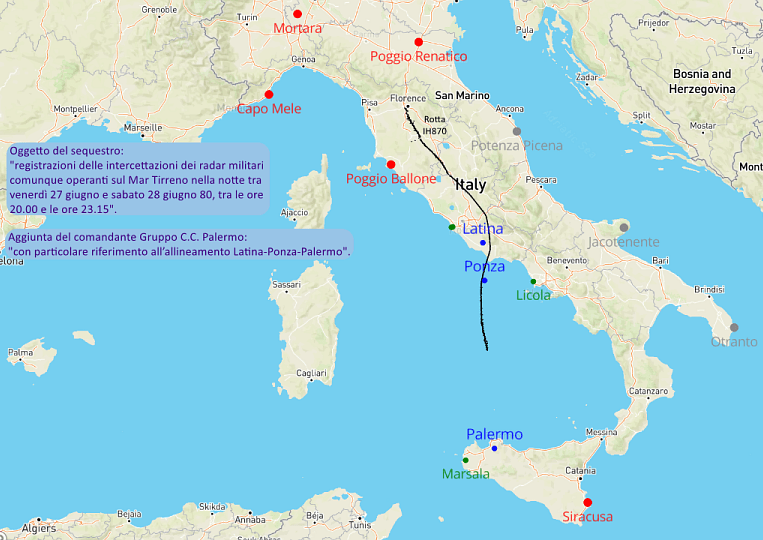
Ciò che, invece, è chiaro è il disastro derivato dall'arbitraria aggiunta, come mostrato dalla cartina. Cinque centri radar vengono esclusi dal sequestro, due dei quali (Poggio Renatico e Poggio Ballone) sono di fondamentale importanza per coprire il volo del DC-9.
Nel frattempo, la competenza viene trasferita alla Procura della Repubblica di Roma, il cui sostituto Santacroce, in data 16 luglio 1980, emette un decreto di sequestro concernente (v. "Motivazione" a pag. 54):
1. le registrazioni su nastro magnetico dei tracciati del radar della difesa aero-territoriale operante nella zona compresa tra Latina-Ponza-Palermo, "da ricercarsi presso l’ITAV-Traffic di Roma-Eur"; 2. le registrazioni su nastro magnetico dei tracciati radar "Marconi e Selenia" riguardanti il volo IH-870 Bologna-Palermo del 27.06.80, "da ricercarsi come sopra"; [...]
Il 21 luglio, il decreto viene notificato al comandante del 2° Reparto ITAV-TRAFF, ma egli riferisce (v. "WP003558_001.DOC"
fonte):
LE REGISTRAZIONI DEI TRACCIATI DEL RADAR DELLA D.A. OPERANTI NELLA ZONA TRA LATINA-PONZA E PALERMO (C.R.A.M. LICOLA E C.R.A.M. PALERMO [Marsala, ndr]) SONO STATE ACCENTRATE PRESSO L'AEROPORTO DI PALERMO A SEGUITO DI ACCORDI PRECEDENTI CON L'A.G. DI PALERMO PER FACILITARNE LA MESSA A DISPOSIZIONE DELLA PREDETTA PROCURA, PRECEDENTEMENTE INCARICATA DEL CASO IN ESAME.
Il giorno seguente, il comandante trasmette un messaggio a vari enti per ricevere il materiale con la massima urgenza (v. "WP000213_001.DOC"
fonte):
PAGINA DUE RIFTB 1332 UNCLAS
2. SEGUITO ACCORDI INTERCORSI CON AEROREGIONI COMPETENTI PREGASI VOLER PROVVEDERE AFFINCHE' PREDETTA DOCUMENTAZIONE SIA INVIATA CON MASSIMA URGENZA POSSIBILE PRESSO SCRIVENTE ITAV-TRAFF PER SUCCESSIVA CONSEGNA AT PROCURA ROMA.
Ancor prima di trasmettere il messaggio, lo stesso 21 luglio un aereo atterra a Trapani-Birgi per ritirare il plico da consegnare all'ITAV e riparte alla volta di Ciampino, dove il plico viene consegnato (v. "TITOLO 2 - L’istruttoria dal 27 luglio 90 al 31 dicembre 97." a pag. 313).
Nella lettera d'accompagno a firma del comandante dell'aeroporto di Birgi, veniva specificato (sempre a pag. 313):
Seguito contatti verbali con capo Ufficio Operazioni della 3a Regione Aerea, in allegato si trasmettono le registrazioni effettuate dai
CRC di Marsala, Licola e Poggio Ballone il 27.06.80 dalle ore 18.00 alle ore 21.34
Quindi anche quest'ultimo, inizialmente escluso, venne considerato. Il centro di Poggio Ballone, infatti, arrivava a coprire lo spazio aereo fino a circa 90 km a sud di Ponza, quindi comprendeva un'ampia parte della zona Latina - Ponza - Palermo.
Il comandante del 2° reparto ITAV consegna il plico alla Guardia di Finanza di Roma il 22 luglio, ma non senza qualche sorpresa (v. ancora pag. 313):
Veniva così acquisito lo stralcio delle registrazioni dei tracciati radar della Difesa Aerea territoriale di Licola e Marsala. Nell’occasione il Fiorito De Falco riferiva che il radar di Licola non aveva nastri di registrazione in quanto basato su sistema fonetico-manuale, mentre le registrazioni su nastro relative al radar di Marsala erano inserite nell’elaboratore elettronico del citato radar.
Così come emerge sempre da questo verbale che il Fiorito De Falco non consegnava la documentazione di Poggio Ballone, pur pervenuta da Trapani Birgi, documentazione che unitamente a quella di Licola e Marsala era stata concentrata in quell’aeroporto [...]
Non vengono, quindi, consegnati né i nastri di Marsala né alcun dato radaristico relativo a Poggio Ballone.
In base a quanto disposto da Santacroce con il decreto del 16 luglio, il materiale sequestrato (comprendente i dati radaristici) doveva essere affidato al presidente Luzzatti della Commissione d'inchiesta tecnico-formale del Ministero dei Trasporti "per le determinazioni di competenza con riferimento allo sviluppo e all’interpretazione delle registrazioni su nastro magnetico dei rilevamenti radar".
Il fatto di affidare alla Commissione Luzzatti il materiale sequestrato, anziché consegnarlo ai collegi peritali, impedirà ai periti giudiziari di analizzare il materiale radaristico sino al 1988, a causa di forti inconvenienti ed incomprensioni che si protrarranno per anni, probabilmente dovute ad errate o carenti comunicazioni tra le Procure (v. "Motivazione" a pag. 56).
Poggio Ballone
Nella sua O-S, il giudice Priore dedica centinaia di pagine al centro radar di Marsala. Tuttavia, il centro radar A.M. che riveste la massima importanza ai fini della ricostruzione dei fatti è senza dubbio Poggio Ballone.
Le requisitorie del Pubblico Ministero ci dicono quali dati radaristici non sono pervenuti (v. fondo pag. 322):
D) POGGIO BALLONE: MANCANO I NASTRI DELLE REGISTRAZIONI RADAR NONCHE' DELLE TELEFONATE TBT; EPPURE DAL CAPOVERSO DELLA NOTA DI TRASMISSIONE DA POGGIO BALLONE ALL'ITAV DEL 14.07.80 E DALLA NOTA DI TRASMISSIONE DI TRAPANI BIRGI ALL'ITAV DEL 21.07.80 (DAL CUI COMBINATO DISPOSTO EMERGE CHE LE REGISTRAZIONI RADAR DI POGGIO BALLONE FURONO INVIATE DA POGGIO BALLONE A TRAPANI E POI DA TRAPANI ALL'ITAV) NONCHE' DALLE DEPOSIZIONI DEI PILOTI DI GROSSETO TRAPANI E POI DA TRAPANI ALL'ITAV) NONCHE' DALLE DEPOSIZIONI DEI PILOTI DI GROSSETO GON E MARESIO (G.I. 26.03.92 E CONFRONTO 07.07.95; GON G.I. 22.01.93 E CONFRONTO 07.07.95 CHE EVIDENZIANO CHE FU LORO CONSEGNATO A GROSSETO DA POGGIO BALLONE UN PLICO CONTENENTE DEI NASTRI CON TANTO DI CUSTODIA METALLICA DA CONSEGNARE A TRAPANI) RISULTA CHE GIA' IL 13.07.80 FURONO TRASPORTATE IN AEREO DA GROSSETO A TRAPANI I NASTRI DEI RADAR, CHE POCHI GIORNI DOPO PROSEGUIRONO PER L'ITAV OVE PERALTRO (VEDI ANCHE SUB POSIZIONE IMPUTATO FIORITO DE FALCO) NON FURONO MAI RINVENUTI.
Stando al registro del M.I.O. i nastri magnetici usati quella sera erano i numeri 60 e 61 (v. "TITOLO 2 - L’istruttoria dal 27 luglio 90 al 31 dicembre 97." a pag. 316):
La sera del 27 giugno al tempo dell’incidente e immediatamente prima era inserito il nastro 60; il successivo il nr.61 fu inserito alle ore 21.40. Ebbene i nastri nr.60 e 61 non sono stati reimpiegati subito dopo l’ultimazione del ciclo dei nastri a disposizione e cioè il 31 luglio, ma bensì il 22.08.80 (come risulta dal registro MIO e dall’ordine cronologico).
Il mancato riutilizzo dei due nastri dopo il normale periodo di 30 giorni è anche confermato dall'operatore montante del turno serale (v. "WP003919_001.DOC" fonte):
A D.R.: NEL TURNO TRA IL 30 E IL 31.07.80, L'OPERATORE SMONTANTE MIRACCO ANNOTA L'INSERIMENTO DEL NASTRO DI RECORDING NR. 59/A, IL MONTANTE CIOE' IO, INSERISCE IL NASTRO NR. 62, SALTANDO I NASTRI NR. 60 E 61; TALE CIRCOSTANZA SI POTEVA VERIFICARE O PERCHE' I NASTRI ERANO "STIRATI" E NON UTILIZZABILI OPPURE PERCHE' ACCANTONATI SU DISPOSIZIONE DEL CAPO UFFICIO OPERAZIONI. NON RICORDO SE DEI NASTRI ACCANTONATI O "STIRATI" VENIVA FATTA RELAZIONE DELL'UFFICIO OPERAZIONI.
A prescindere dall'effettivo stato di usura dei due nastri, è evidente che fu diramato l'ordine di accantonarli. Infatti, quando il 31 luglio arriva il momento di riutilizzare il nastro 60, questo viene saltato insieme al 61. Se non ci fosse stato l'ordine di accantonarli è ovvio che sarebbero stati riutilizzati nel normale riciclo di nastri (il 31 luglio).
Invece i due nastri vengono reimmessi nel riciclo a 1 mese di distanza da quel 22 luglio, giorno in cui il comandante del 2° reparto ITAV consegna il plico con i dati radaristici alla Guardia di Finanza (come detto nel precedente paragrafo).
È, quindi, evidente che era stato diramato l'ordine di non rimettere in circolo i nastri e di conservarli, ma a seguito di difformità negli adempimenti burocratici tra A.G., Ministero della Difesa e 3a Regione Aerea, che hanno creato confusione e perdite di tempo, i nastri vengono comunque riutilizzati, con esemplare rispetto delle regole da parte dell'A.M. che prevedono, appunto, di rimettere in circolo i nastri registrati dopo 30 giorni, evitando lo spreco di nastri vergini.
Evidentemente, l'A.M. non ha ritenuto di dover conservare scrupolosamente materiale radaristico sottoposto a sequestro e sembra anche non aver ritenuto significativo il fatto che sul nastro numero 60 (rimesso in circolo o rottamato per usura) erano presenti circa 12 minuti di registrazione relativa ad un aereo abbattuto.
Dopo vari infruttuosi tentativi di recuperare i dati radaristici di Poggio Ballone, si arriva all'agosto del 1988 (v. "WP001297_001.DOC" fonte):
IN DATA 12.08.88, IN ESECUZIONE DELL'ORDINE EMANATO DAL TRIBUNALE DI ROMA (DR. BUCARELLI), IL MAGG. PETRACCIANI E IL BRIG. UMBRO DEL NUCLEO DI P.G. C.C. DI ROMA ACQUISIVANO LA DOCUMENTAZIONE DEL RADAR DI POGGIO BALLONE.
TRA LA DOCUMENTAZIONE CONSEGNATA FIGURAVANO LE 11 CARTINE DEGLI AVVISTAMENTI RADAR, MA NON FIGURAVA NE' LA "DATA REDUCTION" NON PIU' IN POSSESSO DEL SITO (4 COPIE ERANO STATE INVIATE AL 1^ R.O.C. E 1 COPIA AL COMANDO AEROPORTO TRAPANI BIRGI), NE' I NASTRI DI REGISTRAZIONE NON PIU' REPERIBILI PRESSO IL SITO DI POGGIO BALLONE.
Le 11 cartine costituiscono la rappresentazione grafica dei plot registrati da Poggio Ballone dalle 18:00 alle 21:15 del 27.06.80 e fanno parte della documentazione misteriosamente scomparsa nel luglio 1980 (v. precedente paragrafo).
Gli anni passano e arriviamo al 04.06.90, quando l'allora giudice istruttore Bucarelli emette un ulteriore decreto di sequestro presso il centro radar di Poggio Ballone riguardante (v. "WP002020_001.DOC" fonte a pag. 10):
NASTRI DELLE REGISTRAZIONI RADAR; TRACK HISTORY RECORDING IN ORIGINALE; CONSOLE DATA RECORDING IN ORIGINALE; DA-1 IN ORIGINALE E OGNI ALTRO EVENTUALE DOCUMENTO ATTINENTE ALLE REGISTRAZIONI RADAR AD ESCLUSIONE DI QUELLI CONSEGNATI IN DATA 22.11.89; WINTR IN ORIGINALE, IL TUTTO RELATIVO AL 27.06.80 DALLE ORE 18,00 ALLE ORE 20,00 GMT.
Il 30 giugno, Bucarelli emette un altro decreto di sequestro da eseguirsi presso il 1° R.O.C. di Montevenda riguardante (v. stessa fonte precedente a pag. 11):
TRACK HISTORY RELATIVI ALLE ORE 21,00 CIRCA DEL 27.06.80 DEL 21° GRUPPO RADAR DI POGGIO BALLONE;: NASTRO DELLE REGISTRAZIONI RADAR COME SOPRA.
A tempo di record, il 2 luglio, il comandante del 1° R.O.C. consegna all'A.G. l'ultima copia di 4 THR. Le altre copie furono trasmesse alla 1a R.A. nell'88 e al capo ufficio relazioni esterne dello S.M.A. nel '90.
Nel disperato tentativo di recuperare i nastri di Poggio Ballone, a febbraio del '92 vengono emessi altri decreti di sequestro (tutti concernenti i nastri di Poggio Ballone) presso gli aeroporti di Trapani-Birgi, Palermo-Boccadifalco, Punta Raisi e 3° R.O.C. di Martinafranca (v. stessa fonte precedente a pag. 16). Sappiamo bene che l'esito fu negativo.
Dopo altri 3 anni, il 25.05.95, viene sequestrata la 2a copia della THR di Poggio Ballone (v. stessa fonte precedente a pag. 18).
In data 27.03.96 vengono sequestrate altre 2 THR presso lo S.M.A., arrivando alle attuali 4 copie cartacee della sola THR, che è la sequenza temporale dei plot con tutti i dati a corredo, mentre le altre informazioni presenti sui nastri (come la sequenza delle azioni compiute dagli operatori alla console e il tabulato intercettazioni) andranno perse per sempre.
Ma la storia non finisce qui, poiché le copie risultano avere le seguenti anomalie (v. sempre "WP002020_001.DOC" fonte, pag. 21):
* NR. 3 TRACK HISTORY SEQUESTRATE IN DATA 02.07.90 AL 1° R.O.C. IL 25.05.95 ALLA 1^ R.A. E IL 27.03.96 PRESSO LO SMA, QUEST'ULTIMA PERVENUTA DALLA 1° R.A. IN DATA 04.07.88, RISULTAVANO ESSERE UGUALI TRA DI LORO, CON UNA MANCANZA DI DATI TRA LE ORE 18,30/Z E LE ORE 18,33/Z;
* NR. 1 TRACK HISTORY SEQUESTRATA IN DATA 27.03.96 PRESSO LO SMA, PERVENUTA IN DATA 01.06.90 DAL 1° R.O.C., CONFRONTATA CON LE ANZIDETTE PRESENTAVA:
1) NON AVERE UNA NUMERAZIONE PROGRESSIVA DA PAGINA 1 A PAGINA 305 COME LE ALTRE COPIE BENSI' ALCUNE RIPETIZIONI CIOE' DA PAGINA 2 A PAGINA 69; DA PAGINA 1 A PAGINA 21; DA PAGINA 1 A PAGINA 228;
2) UN VUOTO DI REGISTRAZIONE DA ORE 18,31,540 A ORE 18,36,251, MENTRE NELLE ALTRE 3 COPIE IL VUOTO E' COMPRESO TRA LE ORE 18,30,180 E LE ORE 18,33,536;
3) LA NON RIPETIZIONE DI DATI DA ORE 19,32,276 A ORE 19,37,186 CHE INVECE E' PRESENTE NELLE ALTRE 3 COPIE;
4) AVERE DEI "ZERO LENGHT RECORD" IN ORARI DIVERSI RISPETTO ALLE ALTRE 3 COPIE;
5) ESSERE STAMPATA IN UNICA COPIA ORIGINALE A MODULO CONTINUO, MENTRE LE ALTRE 3 RISULTANO ESSERE COPIE DI UNA STAMPATA A MODULO CONTINUO FORMATA DA 4 FOGLI.
La differenza, forse, più significativa riguarda il buco temporale, lungo circa 3 minuti e mezzo nelle prime THR sequestrate e circa 4 minuti e mezzo nell'altra. Anche l'inizio del vuoto è diverso ed è posticipato di circa 1 minuto e mezzo nella THR con buco di 4 minuti e mezzo.
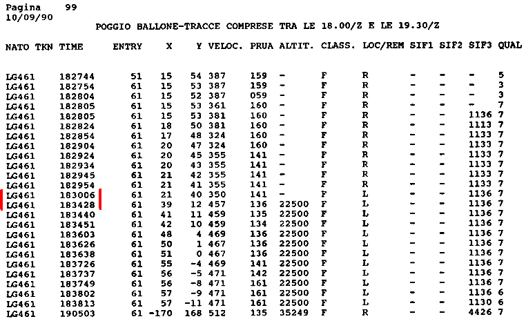
L'immagine mostra una parte del tabulato (composto da 170 pagine) che il Capo di Stato Maggiore dell'Aeronautica inviò il 17.09.90 al presidente della Commissione parlamentare d'inchiesta sul terrorismo in Italia e sulle cause della mancata individuazione dei responsabili delle stragi.
L'esempio serve soltanto per vedere in cosa consiste, in pratica, questo famoso buco temporale.
Si nota che i plot di questa traccia sono registrati con una certa regolarità, poi c'è il salto improvviso di oltre 4 minuti evidenziato con le due barrette rosse.
Questo buco temporale riguarda non solo LG461 dell'esempio, ma tutte le tracce presenti nel tabulato.
Una delle tante conferme in merito alla presenza del buco temporale ce la dà il programmatore del centro radar di Poggio Ballone, che dichiara (v. "WP002066_001.DOC" fonte a pag. 3):
NOTO CHE ESISTE UN "SALTO" NELLA REGISTRAZIONE TRA LE ORE 18,30,180 E LE ORE
18,33,535 SENZA CHE SULLA RIDUZIONE DATI COMPAIA ALCUN DIAGNOSTICO; PER
DIAGNOSTICO INTENDO UN MESSAGGIO CHE DICE CHE IN QUEL TRATTO IL NASTRO ABBIA
TROVATO DIFFICOLTA' O NON RIESCE A LEGGERE NULLA, CIOE' NON E' ASSOLUTAMENTE NORMALE: AD ESEMPIO POTREBBE ESSERCI STATO UN MESSAGGIO TIPO "ZERO LENGHT
RECORD". ANCHE NELL'IPOTESI CHE CI SIA UN CALO DI TENSIONE CHE DETERMINEREBBE UN
FERMO DEL SISTEMA CI SAREBBE COMUNQUE UN DIAGNOSTICO.
Il capitano Pongiluppi, all'epoca comandante dell'Ufficio Operazioni del centro radar di Poggio Ballone, riferisce (v. "WP000877_001.DOC" fonte a pag. 2):
A D.R.: - NON HO NOTATO NELLA RIDUZIONE DATI ALCUN BUCO DI ORARIO; SE LI AVESSI NOTATI, MI SAREI CHIESTO IL PERCHE' E LO AVREI CHIESTO ALL'UFFICIALE TECNICO E AL M.I.O., GIACCHE' SE C'E' MANCATA RIDUZIONE C'E' MANCATA REGISTRAZIONE. SE SI EFFETTUA LA RIDUZIONE DATI IL PROGRAMMA NON REGISTRA. NON HO NOTATO BUCHI DI ORARIO NELLA RIDUZIONE DATI DEL 27.06.80.
PRENDO VISIONE DELLA TRACK HISTORY DEL 27.06.80 ED IN RELAZIONE AL BUCO DI ORARIO TRA LE 18,30,180/Z E LE 18,33,535/Z NON RICORDO DI AVERLO NOTATO NE' QUANDO HO EFFETTUATO LA TRASPOSIZIONE SU CARTINA NEL 1980 NE' QUANDO MI E' STATO ORDINATO DALL'UFFICIO DA CUI DIPENDEVO NEL 1990, CIOE' L'ITAV. IL BUCO ORARIO PUO' DETERMINARSI O DA UNA INTERRUZIONE DEL RECORDING O DAL MALFUNZIONAMENTO DELL'APPARATO STESSO O DA UNA SOSTITUZIONE DEL NASTRO.
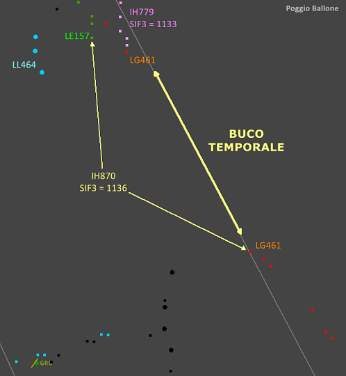
Le THR con il buco di 3,5 minuti mostrano un aereo di linea, l'IH870, sparire improvvisamente (inizio del buco temporale) quando si trova 67 km a sud del VOR di Firenze, per poi ricomparire (al termine del buco) 127 km a sud del VOR.
Se Pongiluppi avesse usato la stessa riduzione dati consegnata all'A.G. (quella con il buco temporale), risulta impossibile pensare che non si sarebbe accorto dell'improvvisa ed ingiustificabile scomparsa della traccia esaminata. Molto verosimilmente, accortosi di una tale stranezza, avrebbe esaminato anche altre tracce, arrivando certamente ad accorgersi che mancavano più di tre minuti di registrazione, ma lui riferisce di non aver notato buchi.
Appare evidente, quindi, che il fatto di non aver notato buchi di orario non significa che sbadatamente il capitano non ha visto un buco di oltre 3 minuti e mezzo, ma significa che la riduzione dati originale era completa, mentre l’A.G. ha ricevuto copie incomplete perché successivamente modificate.
Il pubblico ministero, nell'evidenziare la presenza di THR tra loro differenti, giunge all'ovvia deduzione che il buco temporale è stato creato in fase di stampa e non dipende da difetti di registrazione (v. "WP000299_001.DOC" fonte a fine pag. 2):
IL FATTO CHE, ALMENO IN PARTE, IL SECONDO TABULATO CONTENGA DATI ASSENTI NEL PRIMO IMPLICA CHE NON SI TRATTO' DI UN DIFETTO NELLA REGISTRAZIONE DEI DATI, MA CHE VI FU UN INTERVENTO NELLA FASE DI STAMPA. TALE INTERVENTO, PERALTRO, FU TALE DA EVITARE I MESSAGGI DI DIAGNOSTICA (E CIOE' QUELLI CHE INDICANO LA FINE STAMPA E L'INIZIO STAMPA).
Grazie alla presenza dei tabulati radar di Ciampino, possiamo verificare ciò che è stato tolto con il buco temporale di 3 minuti e mezzo.
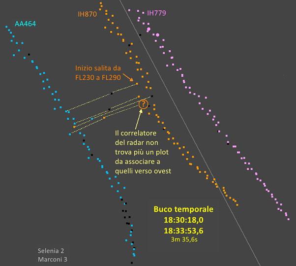
La cartina mostra tutti i plot registrati dai due radar di Roma nell'intervallo temporale corrispondente al buco temporale di Poggio Ballone di 3 minuti e mezzo.
Si notano vari plot aventi una sequenza temporale tale da mostrare un aereo che si sposta velocemente dall'IH870 all'AA464.
Si può dedurre, quindi, che doveva essere presente almeno un aereo tra i due voli Itavia.
Non appena l'IH870 inizia la salita al livello di volo di crociera, l'aereo misterioso schizza via dal DC-9 e si va ad appiccicare al caccia che vola in parallelo al convoglio.
Le linee gialle collegano i plot del Marconi rilevati tutti nello stesso istante.
La spiegazione è troppo complessa per lo scopo di questa pagina, ma in sostanza, si nota che la circuiteria del radar (il correlatore) inizia improvvisamente a non correlare più i plot rilevati dal radar secondario con quelli rilevati dal primario. Ciò è dovuto alla presenza di un aereo tra il caccia e il DC-9 che riflette il segnale del primario ma non risponde all'interrogazione del secondario, mentre AA464 e il DC-9 rispondono entrambi al secondario.
Quando l'aereo misterioso è sufficientemente vicino ad AA464, i radar di Roma iniziano a confondere le risposte dei transponder, al punto che il Marconi arriva ad associare sia il primario che il secondario al plot arancione situato circa a metà strada tra il caccia e il DC-9, momento in cui si nota l'assenza di un plot associabile all'IH870, poiché il correlatore, sbagliando, associa la risposta del transponder del DC-9 all'eco dell'aereo misterioso.
Un'animazione dovrebbe rendere maggiormente evidente quanto finora visto.
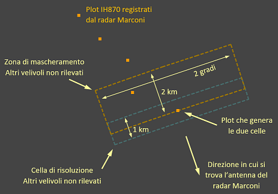
Durante l'animazione vengono mostrati anche due rettangoli associati all'IH870, che in realtà sono settori di due corone circolari entrambe centrate sull'antenna del radar Marconi.
La cella più ampia è la zona soggetta al fenomeno del mascheramento che interessava il radar Marconi. Si estende per circa 2 km dietro all'aereo rilevato dal radar (il DC-9, in questo caso) ed è ampia 2 gradi, equivalenti a circa 6 km nel tratto oggetto della simulazione.
Da notare che con l'espressione "dietro all'aereo" non s'intende il senso del moto dell'aereo, ma significa in direzione opposta a quella dell'antenna del radar.
L'altra cella si chiama di risoluzione perché il radar non riesce a risolvere (o a distinguere) due o più aerei che dovessero trovarsi all'interno della cella. Questa si estende per circa la metà di quella di mascheramento ed è centrata sull'aereo che riflette il segnale radar.
Un aereo che si trovasse all'interno di una delle due celle non sarebbe visualizzato sullo schermo del radar Marconi (verrebbe visualizzato solo 1 plot), a prescindere dalla differenza di quota tra i due aerei.
La differenza tra le due celle, oltre alla grandezza, è che quella di mascheramento si estende dietro all'aereo che la genera, mentre quella di risoluzione è centrata sull'aereo che la genera.
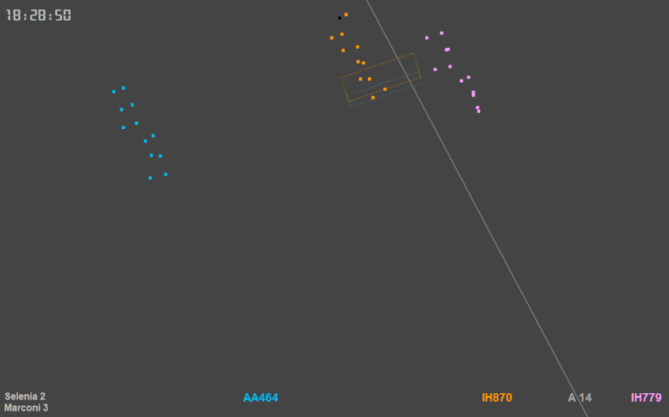
L'animazione a velocità normale mostra i due voli Itavia e il caccia AA464 che gli vola in parallelo, mantenendo un perfetto sincronismo con l'IH870.
La linea grigia rappresenta l'asse dell'aerovia A-14 nel tratto Firenze - Bolsena.
Non c'è molto da aggiungere a quanto detto, salvo il fatto che, grazie ai plot animati, risultano ben evidenti sia il perfetto sincronismo tra il caccia e il DC-9 che l'evidente spostamento di plot dal DC-9 al caccia.
Durante questa fase, la distanza tra AA464 e l'IH870 è inizialmente pari a 17 km e si riduce a poco più di 14 km al termine dell'animazione.
Per concludere il capitolo su Poggio Ballone, vediamo in cosa consiste il secondo buco temporale, quello di 4 minuti e mezzo.
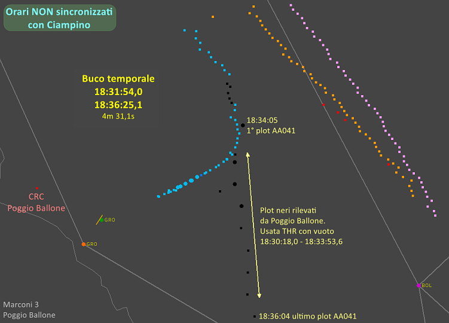
Sfruttando i tabulati di Roma e quello di Poggio Ballone disponibile su
STRAGI80.it, si può appurare che questo secondo buco temporale elimina il cambio d'aereo già visto in corrispondenza del precedente buco e la serie di plot relativi ad AA041 (certamente militare per la presenza del codice SIF di modo 2) che si allontana a gran velocità dal caccia AA464 che gli ha dato un passaggio (l'elevata velocità di circa 920 kn potrebbe essere attribuibile all'errore commesso dall'operatone nel posizionare il cursore sui plot grezzi).
Preso atto di ciò che concerne i due buchi temporali, è veramente difficile pensare che tali vuoti si siano creati per puro caso.
In conclusione, per Poggio Ballone sono disponibili due versioni di THR certamente non originali che messe insieme riducono i due buchi temporali ad uno solo di lunghezza pari a 1m36s. Tale vuoto, termina esattamente quando termina il passaggio dell'aereo misterioso dal DC-9 al caccia.
Ciò che invece non abbiamo sono i nastri con tutte le informazioni che da essi si ricavano.
Marsala
Le informazioni radaristiche che si possono ottenere dal centro radar di Marsala sembrano di scarsa rilevanza, dal momento che i tabulati mostrano quasi esclusivamente traffico civile conosciuto.
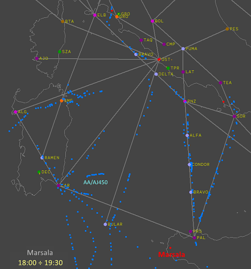
Nell'intervallo di tempo che interessa la tragedia non compaiono tracce significative, a meno che non venga usata una certa dose d'immaginazione sulla traccia AJ450, il famoso presunto pallone sonda ritenuto dai consulenti di parte lesa un aereo militare che attua azioni d'inganno nei confronti del radar di Marsala.
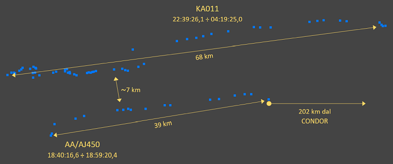
Circa 3
h40
m dopo il disastro, inizia a comparire la traccia KA011, che sembra replicare la traccia AJ450 sia per il percorso che per l'elevatissima quota; arriva infatti a superare i 70000 piedi, oltre 23 km.
Su queste due tracce ci sono alcune teorie, ma nessuna che abbia una base solida né, tantomeno, oggettiva.
Tra le innumerevoli bufale che affliggono questa tragedia, ce n'è una che riguarda da vicino il radar di Marsala: l'assenza di plot nelle vicinanze del DC-9 al momento del disastro certificherebbe anche l'assenza di aerei.
Per rendersi conto di quanto sia falsa e ridicola tale bufala, è caldamente raccomandato di prendere visione di come stanno realmente le cose sfruttando la pagina "I radar «vedono» tutto".
Per ciò che attiene all'argomento qui trattato, questo centro radar è tra quelli interessati dal decreto di sequestro emesso dal Sostituto Procuratore Guarino il 5 luglio 1980, di cui s'è già detto nel paragrafo "Decreti di sequestro iniziali".
Priore sottolinea le numerose difficoltà incontrate per acquisire i nastri di registrazione, ma a parte questo, ciò che interessa in questa sede è che il 3 ottobre il comandante del centro radar consegna i nastri all'allora giudice istruttore Santacroce, informandolo che il materiale consegnato è coperto da segreto militare (v. "WP000189_001.DOC"
fonte):
L'ANNO MILLENOVECENTOTTANTA, IL GIORNO 3 OTTOBRE, DAVANTI A ME, MAGG.AA.RS. MONTINARO PASQUALE, COMANDANTE DEL 35^ CRAM, SI E' PRESENTATO NEL MIO UFFICIO, SITO NELL'AREA OPERATIVA DI TIMPONE GUDDINO, MARSALA, IL DOTT. GIORGIO SANTACROCE.
[...]
PER QUANTO SOPRA IL COMPARENTE MI RICHIEDE LA CONSEGNA DEL SEGUENTE MATERIALE:
- COMPUTER TAPE NR. 99 N.D.C. 5835-15-R59-7254 CONTENENTE LA "TRACK HISTORY DATA RECORDING" DALLE ORE 11,20/Z DEL 27.06.80 ALLE ORE 19,00/Z E DALLE 19,25/Z DEL 27.06.80 ALLE ORE 10,47/Z DEL 28.06.80;
- COMPUTER TAPE NR. 100 N.D.C. 5835-15-R59-7254 CONTENENTE LA "TRACH HISTORY DATA RECORDING" DALLE ORE 19,00/Z DEL 27.06.80 ALLE ORE 19,25/Z DEL 27.06.80;
[...]
PREVENGO INOLTRE IL COMPARENTE CHE IL MATERIALE CONSEGNATO CONTIENE NOTIZIE ED INFORMAZIONI COPERTE DA SEGRETO MILITARE.
LA TRATTAZIONE DI DETTO MATERIALE, IL SUO USO, LA SUA CONSERVAZIONE ED IL TRASPORTO DEVONO UNIFORMARSI A QUANTO PRESCRITTO DAL R.D. 11 LUGLIO 1941 NR. 1161 (NORME RELATIVE AL SEGRETO MILITARE) ED ALLA PUBBLICAZIONE SMD 1/R (NORME SULLA TUTELA DEL SEGRETO MILITARE).
Il fatto del segreto militare sarà ripreso in considerazione dai P.M. nel '91 al momento d'analizzare un messaggio inviato al SISMI dal SIOS Aeronautica; ecco la parte del messaggio d'interesse
(v. "WP002923_002.DOC"
fonte):
IN ESITO A QUANTO RICHIESTO PRECISASI CHE AT MAGISTRATO INQUIRENTE SUNT STATE CONSEGNATE /:/
- NR. 2 BOBINE DI REGISTRAZIONE RADAR CONTENENTI DATI CINEMATICI RELATIVI A TRACCIAMENTI NON CLASSIFICATI NELL'AREA INTERESSATA DALL'EVENTO /./ I NASTRI CONTENGONO ANCHE ALCUNI DATI TECNICI DEL RADAR CON CLASSIFICA "RISERVATO" /./ TALI ULTIMI DATI NON SUNT RELATIVI AT EVENTO ET POSSUNT ESSERE ESTRATTI SOLO CON APPARATI SPECIALI IN DOTAZIONE ALL'A.M. /./ PER PROTEGGERE TALI DATI SUNT STATE COMUNQUE ADOTTATE ADEGUATE MISURE CAUTELATIVE /;/
Il legittimo dubbio dei P.M. è
(v. "WP015954_001.DOC"
fonte, pag. 5):
DA CIOE' RISULTA CHE I NASTRI CONSEGNATI ALL'A.G. IN ESECUZIONE DELL'ORDINE DI SEQUESTRO POTREBBERO ESSERE STATI MANIPOLATI AL FINE DI IMPEDIRNE L'INTEGRALE LETTURA.
Ma le "misure cautelative" non costituiranno l'unico motivo per dubitare dell'effettiva integrità dei nastri di Marsala, come si vedrà tra poco.
Tornando al 1980, l'undici novembre, Santacroce ed altro personale si recano presso la Brigata Tecnica Addestrativa della Difesa Aerea di Borgo Piave per decifrare i nastri. Da questi vengono ottenuti due tabulati che pur coprendo l'orario del disastro, presentano un buco temporale di 8 minuti a partire dalle 19:04
(v. "WP000208_001.DOC"
fonte):
IL GIORNO 11.11.80, NOI, DR. GIORGIO SANTACROCE, SOST. PROC. DELLA REPUBBLICA DI ROMA, ASSISTITI DAL TEN. DELLA G.D.F. FABIO MORERA, CI SIAMO RECATI IN LOCALITA' BORGO PIAVE (LT), PRESSO IL CENTRO TECNICO ADDESTRAMENTO DIFESA AEREA, ALLO SCOPO DI DECIFRARE LE RILEVAZIONI RADAR CONTENUTE NEI NASTRI MAGNETICI SEQUESTRATI PRESSO L'AERA OPERATIVA DI TIMPONE GUDDINO (MARSALA) IL 03.10.80.
[...]
VENGONO CONSEGNATI DUE TABULATI:
- IL PRIMO SI RIFERISCE AL PERIODO DI TEMPO 18,43 - 19,04;
- IL SECONDO AL PERIODO DI TEMPO 19,12 - 7,31.
L'INTERVALLO DI TEMPO 19,04 - 19,12 E' VEROSIMILMENTE IMPUTABILE AL MATERIALE CAMBIAMENTO DEI NASTRI.
ESISTE POI UN ULTERIORE INTERVALLO DI TEMPO CHE VA DALLE 19,22 ALLE ORE 06,47 DEL GIORNO 28.06.80.
Ciò che sul momento sembrò verosimile (il cambiamento dei nastri) non lo sarà più dopo approfondite ricerche.
Infatti, sul cambio dei nastri l'A.G. esprime dubbi derivanti dall'analisi dei registri dell'operatore al computer prodotti negli anni dal 1979 all'83, dai quali non risulta mai stato effettuato un cambio di nastro per l'esecuzione delle esercitazioni SYNADEX (v. "TITOLO 2 - L’istruttoria dal 27 luglio 90 al 31 dicembre 97." a pag. 85):
Va rilevato, infine, che la sostituzione del nastro di registrazione finalizzata alla effettuazione di un’esercitazione Synadex - definita dai vari testi e imputati come prassi costante - non corrisponde al vero, poiché dall’analisi del registro del MIO relativo agli anni 79-81 (v. decreto di esibizione 29.11.89) e di quelli relativi al periodo 81-83 (v. decreto di sequestro 06.10.97) non risulta essere mai stata effettuata una sostituzione di nastri di registrazione in occasione delle esercitazioni Synadex. Il comandante del CRAM, tenente colonnello Cespa, dichiarava che in occasione delle esercitazioni Synadex veniva sostituito anche il nastro reale.
A contestazione del fatto che il nastro di registrazione reale venne sostituito solo in occasione dell’esercitazione del 27 giugno affermava di non
ricordare di aver dato alcuna disposizione in merito (v. esame Cespa Pietro, GI 23.04.96). Da ultimo l’Ufficio ha accertato che non solo il nastro di programma relativo alla Synadex non corrispondeva, ma che altresì la sera del 27.06.80 non fu dato alcun comando per l’accesso ad un qualsiasi Raid-Tape Synadex.
Un'ulteriore indizio sull'insussistente cambio di nastri arriva da un ex maresciallo A.M. che era di servizio presso lo SHOC (il centro operativo dello SHAPE). È il telespettatore che intervenne con una telefonata alla trasmissione "Telefono Giallo" del 10.10.1991. Un paio di settimane dopo la trasmissione egli afferma davanti a Priore
(v. "WP003034_001.DOC"
fonte):
A D.R.: PER QUANTO SO LA REGISTRAZIONE DEI DATI RADAR NON AVVIENE SU UN NASTRO SOLO, BENSI' SU PIU' NASTRI. E' IMPOSSIBILE PERCIO' CHE SI POTESSE PRODURRE UN "BUCO", PER IL CAMBIAMENTO DI UN NASTRO.
I dubbi sull'effettiva esecuzione della SYNADEX derivano anche dallo smarrimento del nastro contenente l'esercitazione che è risultato utilizzato la sera del disastro.
Questo nastro viene consegnato il 12 febbraio 1987 ai Carabinieri di Roma a seguito di loro sopralluogo presso il centro radar di Marsala ed è il nastro SPS 5904
(v. "WP000403_001.DOC"
fonte):
L'ANNO 1987, ADDI' 12 DEL MESE DI FEBBRAIO, IN MARSALA, NEGLI UFFICI DEL 35^
GRUPPO RADAR (SEZIONE DIFESA) DELL'A.M. DI MARSALA, ALLE ORE 13,45.
[...] IL CAP. DEL ZOPPO ANDREA,
[...], CI HA CONSEGNATO LA SOTTOELENCATA DOCUMENTAZIONE:
- [...]
- NASTRO COMPUTER SPS 5904, CONTENENTE LE TRACCE SIMULATE UTILIZZATE DURANTE L'ESERCITAZIONE DEL 27.06.80.
Tuttavia, l'ufficio operazioni aveva disposto l'utilizzo del nastro SPS 5901 e non del 5904 consegnato all'A.G. (v. "TITOLO 2 - L’istruttoria dal 27 luglio 90 al 31 dicembre 97." a pag. 96):
Come è stato già rilevato, la disposizione emanata dall'Ufficio Operazioni del 23 giugno 80, indicava invece, per l'esercitazione del 27 giugno 80, l'utilizzo del nastro SPS 5901. Pertanto la comparazione tra le tracce simulate del nastro Synadex con quelle registrate nel nastro 100 non é stata di utilità, se non nel permettere di accertare che il nastro di registrazione SP 5904, consegnato da Del Zoppo, non era lo stesso che sarebbe stato impiegato la sera del disastro (v. riunione peritale collegio Blasi 23.01.90). Del Zoppo dichiarava in proposito di non ricordare il criterio usato per individuare il nastro consegnato alla PG (v. esame Del Zoppo Andrea, GI 26.01.96).
[...]
Rimangono molte perplessità sull'errore di consegna del nastro di esercitazione Synadex impiegato la sera del disastro. Nastro di cui si sono
perse le tracce. Anche queste circostanze rafforzano i dubbi sull’effettivo inizio della esercitazione.
Gli esperti del Centro di Programmazione della NATO confermano che i due nastri sono tra loro differenti, sebbene molto simili (v. "TITOLO 2 - L’istruttoria dal 27 luglio 90 al 31 dicembre 97." a pag. 111):
Scrivono gli esperti del NPC nel loro Report del 10.3.97: “sebbene molto simili, il nastro della Synadex effettivamente usato il 27.06.80 è
diverso dal nastro SPS5904 che ci è stato fornito”. Quindi diverso da quello consegnato all’AG. A questo punto ci si domanda se le tracce simulate facciano riferimento al contenuto di un diverso raid tape Synadex - come già detto il nastro di esercitazione di quella sera era l’SPS5901 mai consegnato - o siano tracce simulate e basta, cioè non afferenti ad alcun raid tape.
Tra i dati radaristici non consegnati all'A.G. quindi, c'è anche il nastro SYNADEX.
Oltre a questo nastro e oltre ai vari registri non consegnati, non è stato trovato nemmeno il registro DA-1, che doveva essere usato per registrare manualmente i plot durante il buco temporale attribuito all'ipotizzato cambio dei nastri (v. "TITOLO 2 - L’istruttoria dal 27 luglio 90 al 31 dicembre 97." a pag. 80).
È da sottolineare, inoltre, che durante il sopralluogo dell'11 novembre 1980 presso la Brigata Tecnica Addestrativa sono state consegnate le THR, mentre non vengono consegnati gli altri tabulati ricavabili dai nastri (come la CDR) consegnati anni dopo.
Nell'85 viene fatto un altro tentativo per estrarre tutti i dati contenuti nei nastri (v. "Capitolo VII - B.T.A. di Borgo Piave – BTADA." a pag. 36):
In data 20.02.85 viene dato parere favorevole all’accesso dei periti d’Ufficio (collegio peritale Blasi) presso la Brigata Tecnico Addestrativa Difesa Aerea di Borgo Piave per l’estrapolazione dei dati contenuti nei nastri del sito di Marsala; operazione effettuata in data 04.03.85.
L'esito della visita lo leggiamo nell'ultimo capoverso di pag. 14:
Secondo le conclusioni raggiunte dalla Commissione di verifica, il nastro n.1142 sarebbe, secondo le dichiarazioni giudicate “attendibili” del maggiore Raffaelli, il risultato della riproduzione della registrazione del nastro originale n.100 e della riproduzione del nastro originale n.99; tale operazione di ri-registrazione, avrebbe causato la cancellazione dei dati preesistenti.
La Commissione di verifica della BTA è quella sollecitata dal Capo di Stato Maggiore (generale Pisano) nell'ottobre/novembre '89 per fare chiarezza sui tre nastri di cui sopra.
Probabilmente, il materiale prodotto nel marzo '85 è quello rinvenuto nell'88 in una cassaforte dell'area riservata del Gruppo Sviluppo e Sistemi della D.A. presso la B.T.A. di Borgo Piave (v. "WP002101_001.DOC"
fonte per tutti i dettagli).
Per avere la riduzione dati completa dei due nastri di Marsala bisogna attendere dicembre dell'89, quando alcuni periti d'ufficio e altri di parte si recano nuovamente presso la B.T.A. con i nastri da decodificare
(v. "WP001237_001.DOC"
fonte):
IL GIORNO 11.12.89 SONO CONVENUTI PRESSO IL CENTRO B.T.A. - D.A. DI BORGO PIAVE
(LATINA) DELL'A.M. I MEMBRI DELLA COMM.NE PERITALE, [...].
LO SCOPO DELLA VISITA A BORGO PIAVE E' LA RILETTURA DEI DATI RADAR REGISTRATI IL 27.06.80 DAL CENTRO DI MARSALA
NELL'INTORNO DELL'ORA IN CUI ACCADDE L'INCIDENTE DEL DC9 DELL'ITAVIA.
[...]. SI OSSERVA CHE I NASTRI SONO RELATIVI ALLE REGISTRAZIONI SEGUENTI:
1) DALLE ORE 11,20/Z ALLE ORE 19,00/Z DEL 27.06.80 E DALLE ORE 19,25/Z DEL 27.06.80 ALLE ORE 10,47/Z DEL 28.06.80 (CLASS RR - FCICD - FCITD - INTER - WEATH);
2) DALLE ORE 19,00/Z ALLE ORE 19,25/Z DEL 27.06.80 (CLASS RR - FCICD - FCITD - INTER - WEATH);
3) SYNADEX SPS5904 - SPS - SPS5904 - RDID TAPE - SITO 59 (CLASS NU; MTU 1; FROM 2 REEL 1 OF 1).
SI PRECISA CHE SUL NASTRO DI CUI AL PUNTO 1 E' SCRITTO INOLTRE: DATE: 27.06.80; LOC.: MARSALA; NAME: RIDUZIONE DATI; SUL NASTRO DI CUI AL PUNTO 2 E' SCRITTO: DATE: 27.06.80; LOC.: MARSALA; NAME: RIDUZIONE DATI; SUL NASTRO DI CUI AL PUNTO 3 E' SCRITTO: PROJ 4; DATE: 06.02.79; LOC.: MARSALA.
SUL NASTRO DI CUI AL PUNTO 3 CON FOGLIO A PARTE E' INDICATA LA SCRITTA: "ESERCITAZIONE SYNADEX DEL 27.06.80".
L'OBIETTIVO DELLA RILETTURA CONSISTE NEL TENTATIVO DI ACCERTARE SE SUI NASTRI, DI CUI AI PUNTI 1 E 2, SIANO PRESENTI ALTRE INFORMAZIONI, NON ESTRATTE NEL CORSO DELLA PRECEDENTE LETTURA DEL 04.03.85. L'ULTERIORE OBIETTIVO CONSISTE NELLA LETTURA DEL NASTRO NR. 3, NON LETTO IN PRECEDENZA E CHE DOVREBBE FORNIRE CHIARIMENTI SULLE TRACCE RELATIVE ALLA SIMULAZIONE, PRESENTI NEL NASTRO NR. 2.
PER SALVAGUARDARE LA INTEGRITA' DEI NASTRI VIENE AUTORIZZATA UNA COPIA PARZIALE DI LAVORO DI CIASCUN NASTRO, CHE VERRA' COMUNQUE PRELEVATA DALLA COMM.NE PERITALE.
[...]
ALLE ORE 18,30 VENGONO CONSEGNATI I TABULATI OTTENUTI DAI NASTRI E PRECISAMENTE:
A) TRE COPIE DEL CONSOLE DATA RECORDING DALLE 11H 15'52'' ALLE 19H 04'31'' DEL NASTRO 1;
B) TRE COPIE DEL CONSOLE DATA RECORDING DALLE 19H 48'41'' ALLE 20H 03'47'', SEMPRE DEL NASTRO 1;
C) TRE COPIE DEL CONSOLE DATA RECORDING DALLE 19H 13'21'' ALLE 19H 22'48'' DEL NASTRO 2;
D) TRE COPIE DEL TRACK DATA DALLE ORE 18H 09'09'' ALLE 20H 06'37'' DEL NASTRO 1 (TRACK HISTORY RECORDING);
(SI OSSERVI CHE LA TERZA COPIA INIZIA ALLE 18H 18'02'' E TERMINA ALLE 20H 15'38'').
E) TRE COPIE DEL TRACK HISTORY RECORDING DALLE ORE 19H 12'49'' ALLE ORE 19H 22'39'' DEL NASTRO 2;
F) TRE COPIE DEL WINTR (INTERCETTAZIONI) DALLE 11H 36'37'' ALLE 18H 23'26'' DEL NASTRO 1 (CIASCUNA COPIA E' RELATIVA A QUATTRO PASSAGGI SUL NASTRO);
[...]
RELATIVAMENTE AL NASTRO NR. 3 (SYNADEX) SI SONO OTTENUTE I SEGUENTI TABULATI:
A) TRE COPIE DEL CONSOLE DATA RECORDING DALLE 00H 06'33'' FINO A 00H 33'00'' (IL TEMPO RIFERITO E' FITTIZIO ED E' RELATIVO ALL'INIZIO DEL NASTRO);
B) TRE COPIE DEL TRACK HISTORY RECORDING DALLE 00H 06'05'' FINO A 00H 33'28'' (CON LA PRECEDENTE INDICAZIONE CIRCA IL TEMPO).
[...] DA UN ESAME SOMMARIO EFFETTUATO SEMBRA CHE I DATI NON SIANO CORRISPONDENTI A QUELLI DI SIMULAZIONE CONTENUTI NEL NASTRO NR. 2.
Purtroppo, si nota fin da subito che i plot simulati contenuti nel nastro numero 100 (il secondo dei tre usati) non corrispondono a quelli contenuti nel nastro SYNADEX SPS 5904, come già detto.
Resta dunque il dubbio sull'effettiva attendibilità dei nastri 2 e 3.
- L'inquietante relazione
A conclusione di questo paragrafo su Marsala, vale la pena esaminare la relazione che l'operatore al computer redige a seguito di una sua testimonianza dell'86 davanti al giudice istruttore Bucarelli (v. "TITOLO 2 - L’istruttoria dal 27 luglio 90 al 31 dicembre 97." da pag. 98).
La relazione appare utile su tre punti in cui il M.I.O.:
- riferisce che avevano circa 120 nastri magnetici da usare ciclicamente per registrare le informazioni radaristiche (il dato tornerà utile tra poco);
- sembra preoccupato nel notare la perplessità del giudice e del tecnico che lo affiancava durante l'esame;
- aggiunge nella relazione un consiglio per "fronteggiare" due particolari domande.
Sebbene le perplessità notate dal teste riguardino le risposte 2, 4, 6 e 7, egli si sente di dare un consiglio solo per le domande 3 e 4:
Consigli: Onde evitare il ripetersi della questione inerente alle domande N.3 e 4, consigliabile consultare il mio capo Servizio – colonnello Nicolino Pugliese; nde - che ha emanato delle disposizioni in merito
Il giudice Priore fa una deduzione logica e condivisibile:
Il documento [le disposizioni del caposervizio, ndr] sembra rappresentare per chi l’ha scritto ma soprattutto per coloro ai quali probabilmente doveva essere sottoposto in visione, quasi una serie di regole da seguire per fronteggiare gli esami testimoniali.
Vediamo cosa chiedono queste due pericolose domande:
3. Domanda: Questo nastro lei lo ha utilizzato anche di mattina?
A questo interrogativo il giudice mi fa notare che l’orario di registrazione del nastro nr.100 iniziava dalle 19.00Z e dopo le 19.22Z continuava la
registrazione dalla 06.00Z.
Risposta: La registrazione dalle 06.00Z appartiene ad una registrazione precedente, dato che i nastri sono riutilizzati in base alla rotazione precedente.
4. Domanda: Allora come mi spiega che c’è la data del 27.06.80?
Risposta: Perché ad ogni inizio di registrazione sul nastro si inserisce la data del giorno in cui si effettua la registrazione. Iniziando a registrare si cancella automaticamente la registrazione precedente, infatti essendo durata circa 20 minuti la registrazione Synadex quello che segue appartiene ad una registrazione precedente.
Sono domande talmente banali che, ad una prima analisi superficiale, non si riesce a capire quale possa essere la necessità di emanare apposite disposizioni. Il teste, dopotutto, si limita ad esprimere due soli banali concetti:
- i nastri sono riutilizzati ciclicamente;
- i nastri da riciclare sono sovrascritti con i nuovi dati, lasciando che i vecchi dati seguano la nuova registrazione.
Mentre il 1° punto è confermato sia dagli operatori di vari centri radar sia dal fatto che non erano disponibili migliaia di nastri vergini nei centri radar (v. oltre), il 2° punto, invece, è tutto da dimostrare. Cerchiamo, quindi, di focalizzare l'attenzione su questo secondo punto, sfruttando, come sempre, elementi oggettivi dai quali trarre ovvie deduzioni.
La domanda/risposta n° 3 mette in evidenza una cosa abbastanza strana, poiché la registrazione sul nastro n° 100 s'interrompe alle 19:22 per poi riprendere alle 6:00.
Il teste asserisce che ciò sia dovuto al riutilizzo di un nastro sul quale erano rimasti i vecchi dati. Cosa confermata in modo apparentemente logico con la risposta n° 4.
Tuttavia, qualunque nastro magnetico già registrato deve essere smagnetizzato prima di essere riutilizzato, altrimenti il segnale della nuova registrazione si "somma" a quello già esistente.
- Il misconosciuto smagnetizzatore
La smagnetizzazione può essere ottenuta usando un registratore provvisto di una testina di cancellazione anteposta a quella di registrazione ed è questa la soluzione adottata per le applicazioni a basso costo o comunque non professionali.
Ma nel caso di un centro radar, lasciare dati vecchi che seguono una nuova registrazione può essere molto critico. Infatti, la presenza di una qualunque discontinuità di registrazione, ad esempio per un fermo nastro accidentale o voluto, potrebbe rendere impossibile capire se i dati che seguono la discontinuità sono vecchi o nuovi.
L'uso di questa soluzione, inoltre, renderebbe troppo macchinosa e non sicura la cancellazione di nastri contenenti dati coperti da segreto militare, dal momento che la sovrascritura di un nastro con dati casuali allo scopo di cancellarlo lascia un segnale residuo rilevabile con apposite apparecchiature, quindi è un metodo non utilizzabile in ambito militare.
È evidente dunque, che questa modalità non può essere adottata in un centro radar.
Ciò che normalmente si fa in questi casi, è utilizzare un apposito apparecchio smagnetizzatore (o degausser), in grado di cancellare i nastri in modo veloce e sicuro. L'utilizzo di questo apparecchio, inoltre, rende la nuova registrazione di migliore qualità (più affidabile), dal momento che il precedente segnale viene totalmente cancellato, contrariamente a quanto avviene con la testina di cancellazione, che genera un basso campo magnetico.
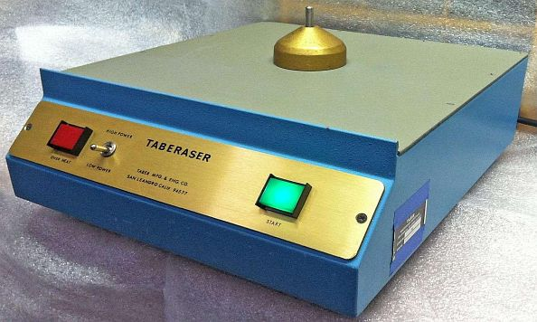
Qui vediamo l'esempio di un vecchio smagnetizzatore degli anni 70.
Si appoggiava la bobina sul piano dell'apparecchio e si accendeva l'interruttore. La bobina veniva ruotata manualmente intorno al perno per due o tre giri e si ripeteva l'operazione girando la bobina sotto-sopra. In circa 10/20 secondi il nastro era pronto per essere riutilizzato o dismesso.
Possiamo vedere un esempio d'adozione dello smagnetizzatore nel seguente stralcio relativo ad un decreto d'acquisizione del nastro radar di Otranto:
(v. "WP001814_001.DOC"
fonte, pag. 2):
16.01.91: - DECRETO DI ACQUISIZIONE DEL NASTRO DI REGISTRAZIONE DELL'ATTIVITA' DI AVVISTAMENTO DEL SITO RADAR DI OTRANTO DEL 18.06.80.
ESITO NEGATIVO, IN QUANTO IL NASTRO E' STATO SMAGNETIZZATO PER ESSERE RIUTILIZZATO.
Si legge che il nastro con i dati radaristici non può essere acquisito poiché è stato smagnetizzato prima di poter essere riutilizzato.
Se questa fosse stata la procedura sistematicamente usata (come è ovvio che fosse), è chiaro che nessun nastro poteva contenere dati vecchi, contrariamente a quanto afferma l'operatore al computer di Marsala.
Tuttavia, in base a quanto riferito da alcuni operatori dei vari centri radar, sembrerebbe che non tutti i siti avessero lo smagnetizzatore, come ad esempio riferisce il programmatore di Potenza Picena, il quale, in un primo momento afferma che i nastri venivano smagnetizzati, ma poi rileggendo il verbale ci ripensa e riferisce che Potenza Picena non aveva lo smagnetizzatore
(v. "WP000958_001.DOC"
fonte):
A D.R.: SE UN NASTRO SI "STIRAVA" E QUINDI NON ERA PIU' UTILIZZABILE OCCORRE FARE RICHIESTA DI UN NUOVO NASTRO ALL'UFFICIO OPERAZIONI ED ANNOTARE L'EVENTO SUL REGISTRO DEL MIO. SE UN NASTRO VENIVA CONSERVATO IL NUMERO PROPRIO DEL NASTRO NON VENIVA UTILIZZATO PER ALTRI NASTRI, SE SUCCESSIVAMENTE VIENE UTILIZZATO QUEL NUMERO SIGNIFICA CHE VIENE SMAGNETIZZATO E RIUTILIZZATO.
[...]
A RILETTURA IL TESTE PRECISA CHE LADDOVE E' SCRITTO: I NASTRI VENIVANO SMAGNETIZZATI PRIMA DI ESSERE RIUTILIZZATI, CHE IL SITO DI POTENZA PICENA NON DISPONEVA DI UN APPARATO PER LA SMAGNETIZZAZIONE DEI NASTRI E CHE IL RIUTILIZZO AVVENIVA MEDIANTE REGISTRAZIONE SUI DATI PRECEDENTI
Anche il programmatore di Poggio Ballone riferisce che il sito non era dotato di smagnetizzatore, precisando che lo stava affermando sulla base della sua conoscenza, come se un programmatore potesse anche disporre di un apparato senza esserne a conoscenza
(v. "WP004437_001.DOC"
fonte, pag. 1):
A D.R.: POGGIO BALLONE, PER QUANTO ERA IN MIA CONOSCENZA, NON AVEVA ALCUN APPARATO PER LA SMAGNETIZZAZIONE DEI NASTRI;
Sembra che Priore non sbagli molto nel definirlo palesemente reticente (v. "WP002066_001.DOC" fonte inizio pag. 1).
Probabilmente si comincia ad intuire quale potesse essere il contenuto delle disposizioni emanate dal caposervizio di Marsala in merito alla relazione del M.I.O.
Cerchiamo di farci un'idea quanto più fondata possibile in merito alla possibilità che un centro radar automatico o semi automatico potesse essere sprovvisto di un apparecchio così importante come lo smagnetizzatore.
Si potrebbe considerare il costo dell'apparecchio e la numerosità dei nastri normalmente presenti; se i nastri sono pochi e il costo è esorbitante, si può anche credere che solo alcuni siti ne venissero dotati, altrimenti ciò sarebbe poco credibile.
La normale dotazione di nastri magnetici la possiamo appurare grazie al seguente atto d'approvazione di una normativa ITAV del '79, che riguarda i soli nastri audio
(v. "WP015581_003.DOC"
fonte, pag. 1):
OGGETTO: ATTO DI APPROVAZIONE NORMATIVA ITAV TLC/RI-04.
"APPROVO LA SEGUENTE NORMATIVA TECNICA ITAV:
RI-04: RACCOLTA DELLE DISPOSIZIONI PER IL PERSONALE TLC, AV E DA RELATIVA AL SERVIZIO DEL MATERIALE SPECIALE AERONAUTICO (MANUTENZIONE E RIFORNIMENTO)".
ROMA/EUR 20.12.79
[...]
NR. 1 FOGLIO CONTENENTE "DISPOSIZIONI CIRCA LA DOTAZIONE DI NASTRI MAGNETICI PER REGISTRATORI AUDIO DI NUOVA CONCEZIONE - ABOLIZIONE DELLE SCORTE CENTRALIZZATE".
[...]
B. LA DOTAZIONE STANDARD DI NASTRI MAGNETICI, STABILITA DALL'ITAV, E' LA SEGUENTE:
NR. 70 NASTRI PER I REGISTRATORI A 24 CANALI THERMIONIC NDC 5835=RN=048=2140;
NR. 70 NASTRI PER I REGISTRATORI A 32 CANALI THERMIONIC RACAL ICR32;
NR. 70 NASTRI PER I REGISTRATORI A 8 CANALI PHILIPS NDC 5835=15=R53=6227;
NR. 70 NASTRI PER I REGISTRATORI A 15 E 22 CANALI PHILIPS.
TALE DOTAZIONE TIENE CONTO DI:
- 30 GG. DI DOTAZIONE;
- 30 GG. DI CONSERVAZIONE DEI NASTRI INCISI;
- 10 GG. DI ULTERIORE CONSERVAZIONE DI NASTRI PER INDAGINI.
Se a questi 280 nastri audio aggiungiamo i circa 120 utilizzati per i dati radaristici, è facile capire che l'assenza di uno smagnetizzatore può essere molto problematica.
Nello stesso atto d'approvazione si legge a pag. 2:
B. IL CAPO SEZ. T.A. DEL CAVC, AL TERMINE DEI 30 GG. PROVVEDERA' A RICONSEGNARE AL CAPO SERVIZIO TLC O SUO RAPPRESENTANTE LE BOBINE PER LA SMAGNETIZZAZIONE E SUCCESSIVA RIUTILIZZAZIONE.
Il T.A. e il CAVC erano enti militari che gestivano il traffico aereo civile e, come si nota, erano obbligati a smagnetizzare i nastri audio. Figuriamoci se può essere possibile che tale obbligo non ci fosse per i dati radaristici coperti da segreto militare!
Passando al costo degli smagnetizzatori, vediamo questo verbale di consegna
(v. "WP018612_003.DOC"
fonte):
5835.15.R58.6229 NASTRO MAGNETICO 30 20.000
5835.15.R70.0552 SMAGNETIZZATORE 1 2.000.000
5835.15.R70.4839 COMPLESSO REGISTRATORE PHILIPS TIPO LDB
8122/01 CORREDATO DI DUE NASTRI MAGNE-
TICI, PARTI DI SCORTA COME DA ALLEGATO C
IN 4 PAGINE 1 27.000.000
5835.15.R70.7121 NASTRO MAGNETICO 47 50.000
È un modello da due milioni di lire; non era regalato, ma non era nemmeno un costo significativo per l'amministrazione di una forza armata. Quasi certamente si tratta di un modello molto più complesso di quello mostrato nella fotografia di prima.
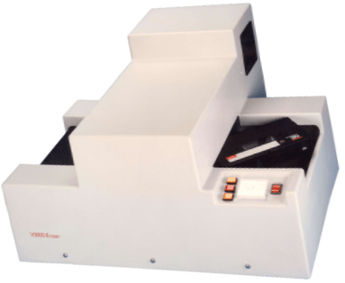
Nel caso di un centro radar della D.A. è più probabile che venissero usati smagnetizzatori di questo tipo, approvati dalla NATO.
Le "pizze" venivano caricate e il macchinario faceva tutto in automatico, lasciando l'operatore libero di svolgere altre attività d'archiviazione, etichettatura, ecc. durante la cancellazione sicura del nastro.
Il modello "semplice" della foto di prima probabilmente aveva un costo simile a quello dell'apparecchio qui indicato come smagnetizzatrice, di appena 110 mila lire
(v. "WP000101_001.DOC"
fonte, fine pag. 2):
5835-15-R58-6225 SMAGNETIZZATRICE " 1 110.000 110.000
5835-RI-421-7722 NASTRI MAGNETICI " 18 66.345 1.194.210
5835-RN-085-9625 SISTEMA MEMORIZ. " 1 24.107.000 24.107.000
Insomma, i costi sono veramente modesti. Ciò che invece è esorbitante è la quantità di nastri da riciclare e da cancellare con modalità approvate dalla NATO.
Non è in alcun modo possibile poter credere che un centro radar non disponesse di apparecchi così utili e di fatto, indispensabili.
Risulta, dunque, molto semplice fare ipotesi logiche e lineari sulla necessità di formalizzare disposizioni per affrontare le domande poste dall'A.G.
Il prontuario di risposte emesso dal caposervizio di Marsala potrebbe essere stato distribuito ai vari addetti al computer, non solo di Marsala, per uniformarsi nel riferire che nel loro sito non c'era lo smagnetizzatore. Quindi, i nastri venivano semplicemente sovrascritti usando registratori con testina di cancellazione. Così facendo, si giustifica la presenza di una vecchia registrazione che segue quella nuova.
Ovviamente questa è solo un'ipotesi, ma uno che si limita a dire semplicemente la verità non ha bisogno di disposizioni per dirla; dice le cose come stanno per ciò che gli compete e basta.
Chiusa questa parentesi sulla relazione del M.I.O. di Marsala, comunque molto utile per valutare l'autenticità del nastro numero 100, possiamo tirare le somme.
Oltre alla mancata consegna del registro DA-1, bisogna aggiungere anche la mancata consegna del nastro SYNADEX e restano dubbi più che fondati sull'autenticità del nastro numero 100.
Licola
Il capitolo dell'O-S che c'interessa ha un titolo perfettamente esplicativo: "La scomparsa del DA1" (v. "TITOLO 2 - L’istruttoria dal 27 luglio 90 al 31 dicembre 97." a fine pag. 146).
Il centro radar di Licola è tra quelli interessati fin da subito (5 e 16 luglio 1980) dai decreti di sequestro (v. "Decreti di sequestro iniziali").
Nonostante il peso dei due decreti che gravano sul centro radar di Licola, il registro DA-1 viene comunque distrutto, presumibilmente nel 1984, come si ipotizza in una relazione per il Ministro della Difesa
(v. "WP001228_001.DOC"
fonte):
1. COME NOTO, SOTTO LA SPINTA DEGLI AVVOCATI DI PARTE CIVILE E' STATA FOCALIZZATA L'ATTENZIONE ANCHE SULLA DISTRUZIONE DEL MOD. DA1 DI LICOLA RELATIVO AL 27.06.80.
AL RIGUARDO, SULLA BASE DELLE DICHIARAZIONI RILASCIATE DAL TEN. COL. M. ORABONA COMANDANTE PRO-TEMPORE DI LICOLA (P.V. DI ACQUISIZIONE DI DOCUMENTAZIONE DEL 18.08.88, ALL. 12) DOVE SI LEGGE CHE I PLOTTAGGI RADAR... SONO STATI INVIATI AGLI ENTI SUPERIORI E CHE "DI TALE DOCUMENTAZIONE NON SI ALLEGA FOTOCOPIA IN QUANTO DISTRUTTA IN DATA 13.09.84", ALLEGATO "A", LA RELAZIONE PER IL SIGNOR MINISTRO DELLA DIFESA RIFERISCE:
"PUR NON AVENDO TROVATO VERBALI DI DISTRUZIONE, DI CUI PERALTRO - TRATTANDOSI DI MATERIALE NON CLASSIFICATO - NON E' PREVISTA LA COMPILAZIONE, SI HA RAGIONE DI RITENERE CHE CONTESTUALMENTE SIA STATO DISTRUTTO ANCHE IL MOD. DA-1 DAL QUALE LO STRALCIO E' DERIVATO." (PAG. 45)
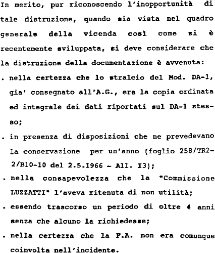
Il generale Pisano, nella sua
relazione del maggio '89, ammette l'inopportunità della distruzione dei documenti (v. pag. 49), ma aggiunge alcuni motivi che la giustificherebbero.
Per valutare tali giustificazioni, conviene tener presente che i documenti distrutti contenevano informazioni d'importanza critica per analizzare lo scenario aereo presente intorno ad un velivolo caduto in mare.
L'inopportuna distruzione del DA-1 e la mancanza di coordinamento tra le varie Procure (come detto al termine del paragrafo "Decreti di sequestro iniziali") sono rese ancor più gravi da quanto afferma il Pubblico Ministero nelle sue requisitorie
(v. Requisitorie del Pubblico Ministero nel procedimento NR. 266/90A P.M. E 527/84A G.I." a pag. 258):
* IL DA1 DI LICOLA E' STATO SOPPRESSO, INSIEME AI TELEX CONTENENTI I PLOTTAGGI EFFETTUATI IL 27 E 28 GIUGNO E INVIATI A MARTINA FRANCA; I DATI RELATIVI A DETTI PLOTTAGGI DESUMIBILI DALLE TELEFONATE REGISTRATE SONO IN INSANABILE CONTRASTO CON QUELLI RIPORTATI NEL "PLOTTAGGIO" UFFICIALE, INVIATO L'11.07.80 E NEL QUALE RISULTA LA PRESENZA DI UN AEREO NON IDENTIFICATO IN PROSSIMITA' DEL DC9, DIVERSO DALL'AIR MALTA.
Non dovrebbe essere necessario sottolineare che tutta la documentazione utile per ricostruire lo scenario di un disastro aereo dovrebbe essere messa a disposizione degli organi preposti alle indagini. Una conferma in tal senso (nel caso ce ne fosse bisogno) arriva dal tenente colonnello Orabona, comandante del centro radar di Licola dall’85.
Nella seguente trascrizione della testimonianza resa nel '91 davanti al giudice Priore e al Pubblico Ministero Salvi, il comandante sottolinea l'importanza di conservare il DA-1 nel caso d'incidente aereo, come lui fece nei primi anni '70. Egli riferisce, inoltre, che durante il precedente servizio sempre presso Licola come controllore e Capo Ufficio Operazioni, durato 8/9 anni, non è mai successo che venissero distaccati fogli dal DA-1
(v. "WP003110_001.DOC"
fonte):
A D.R.: IL MODELLO DA1 NON ERA DOCUMENTO CLASSIFICATO. A LICOLA VENIVA CONSERVATO IN UN LOCALE SITO IN UNA BARACCA IN MURATURA CHIUSA CON LUCCHETTO. IL DA1 CONSISTE IN UN VOLUME RILEGATO COMPOSTO DA QUALCHE CENTINAIO DI FOGLI. NON E' MAI AVVENUTO CHE SE NE DISTACCASSE QUALCUNO SIA INVOLONTARIAMENTE CHE PER ACCEDERE A RICHIESTA DI ENTI ESTERNI, ALMENO PER QUANTO CONCERNE IL PERIODO IN CUI IO SONO STATO IN SERVIZIO PRESSO QUEL G.R.A.M.
[...]
FACCIO PRESENTE CHE NON E' STATO CORRETTAMENTE VERBALIZZATO IL MIO PENSIERO CIRCA LA " RILEVANZA DEL DA1 ". IO INFATTI RITENGO CHE IL DA1 SIA UN DOCUMENTO IMPORTANTE, TANTO E' VERO CHE IN OCCASIONE DI UN ALTRO INCIDENTE AEREO, NEL '71 / '72, PROVVIDI A DISPORRE IMMEDIATAMENTE CHE VENISSE CUSTODITO; INFATTI PROPRIO SUI PLOTTAGGI RILEVATI DAL DA1 SI SVOLSE POI L'ATTIVITA' DELLA COMM.NE INCARICATA DELL'INCHIESTA. IO INTENDEVO QUINDI DIRE CHE IL DA1 NON RIENTRAVA TRA I DOCUMENTI PER IL QUALE FOSSE PREVISTA LA REDAZIONE DEL VERBALE DI DISTRUZIONE.
Gli avvocati di parte civile, in un loro esposto alla Procura della Repubblica, sottolineano la presenza di precise regole che impongono la conservazione dei documenti relativi ad un incidente aereo
(v. "WP000707_001.DOC"
fonte a fine pag. 1):
SI NOTI, TRA L'ALTRO CHE LA DISTRUZIONE VIOLA ANCHE PRECISE REGOLE MILITARI (ITAV) GIA' ASSISTENTI ALL'EPOCA - ALLEGHIAMO COPIA DI QUELLE ATTUALI IN MATERIA - PER LE QUALI COMUNQUE TALI DOCUMENTI ANDAVANO CONSERVATI, PROPRIO PERCHE' RELATIVI AD UN INCIDENTE, COMPLETI ED IN ORIGINALE.
Risulta quindi chiaro, oltre che ovvio, che il DA-1 doveva essere conservato nella sua integrità e tenuto a disposizione per qualsivoglia richiesta da parte delle commissioni preposte ad investigare sugli incidenti aerei.
Pur non riuscendo ad entrare in possesso del DA-1, l'A.G. riesce comunque a recuperare nel novembre dell'88 una sorta di elenco di tracce ridotte dal DA-1 (v. "Motivazione" a pag. 119). Per sapere quale fosse l'elenco in questione, possiamo leggerne i riferimenti nel "TITOLO 3 - Le Perizie." a fine pag. 81: "cinque fogli dattiloscritti con protocollo 433-9/589/1 dell’11.07.80".
Ecco la parte iniziale del plottaggio pervenuto all'A.G.
(v. "WP000539_002.DOC"
fonte):
22^ CENTRO RADAR A.M. LICOLA (NA)
UFFICIO OPERAZIONI
OPERAZIONI E ADDESTRAMENTO
ALL. 1 AL FOG. 433-9/589/1
DELL'11.07.80
PLOTTAGGIO DEL GIORNO 27.06.80
- AVVISTAMENTI RADAR EFFETTUATI NELLA ZONA DEL TIRRENO
DALLE ORE 1800/Z ALLE ORE 2134/Z
1801/Z NNE AJ045 PK 4830 F.1 - Q. 24 - VEL. 460 FAJ045
NNE AJ045 PK 5850
NNE AJ045 QL 2020
1811/Z NNE AJ045 QL 2050
1813/Z NNE AJ045 CEASE
Si può ben notare che le informazioni sono poche ed approssimative. È evidente, infatti, l'ampio intervallo di tempo intercorrente tra due posizioni consecutive, l'orario arrotondato al minuto, la posizione data in coordinate GEOREF anziché in distanza e azimut, non sono nemmeno indicati i codici SIF.
Per ciò che concerne la posizione in coordinate
GEOREF, qui vediamo una griglia d'esempio con la codifica limitata alla zona d'interesse.
Se, ad esempio, si vuole convertire la prima riga "PK 4830", bisogna iniziare a considerare che NJ è sottinteso: NJ PK 4830.
Il "blocco" principale, ampio 15 gradi, della longitudine è rappresentato dalla lettera N, ciò significa che la longitudine è compresa tra 0 e 15°.
P è il "sotto-blocco" ampio 1 grado e va da 13 a 14°. Infine, il numero 48 rappresenta i primi di grado; risultato: 13° 48’ E.
Per la latitudine il procedimento è identico. La lettera J rappresenta una latitudine compresa tra 30 e 45°, K va da 9 a 10°; risultato: (30 + 9)° 30’ N.
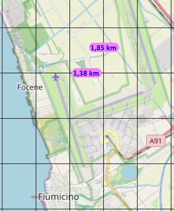
Come detto, la griglia della precedente cartina va suddivisa in primi di grado.
Questa cartina d'esempio mostra le lunghissime piste dell'aeroporto di Fiumicino (lunghe circa 4 km) e la griglia in primi di grado. È così possibile avere un'idea sull'approssimazione usata nel definire la posizione dei plot tramite le coordinate riportate nello stralcio del DA-1.
Gli avvocati di parte civile, sempre nell'esposto già nominato, scrivono
(v. "WP000707_002.DOC"
fonte a pag. 2):
A PARERE DEL COLLEGIO [peritale, ndr] DETTA TRACCIA PUO' COINCIDERE CON AIRMALTA PUR RISCONTRANDO LA NOTEVOLE GROSSOLANITA' CON CUI DETTI DATI SONO STATI RIPORTATI.
[...]
DIFFICILE E' L'INTERPRETAZIONE DEI DATI RADAR DERIVANTI DAL DOCUMENTO IN ESAME.
CERTAMENTE SI SONO RILEVATE CARENZE NEL PLOTTAGGIO PER LE GROSSOLANE INDICAZIONI IN ESSO RIPORTATE.
VA COMUNQUE RILEVATO CHE LA DIFESA AEREA NON AVEVA NE HA TUTTORA I COMPITI SPECIFICI DEL CONTROLLO DEL TRAFFICO AEREO, IN QUANTO ALLA STESSA INTERESSA SOLO STABILIRE SE UN AEREO E' AMICO O NON. UNA VOLTA FATTA QUESTA IDENTIFICAZIONE L'A/M VIENE SEGUITO SOLO PER QUALCHE BATTUTA E POI LASCIATO.
Nonostante l'utilizzo delle coordinate GEOREF, il posizionamento dei plot potrebbe anche essere accettabile. Ciò che invece, rende questo plottaggio privo di utilità è la scarsezza delle informazioni riportate e il fatto che nessuno può garantire la presenza di tutte le tracce che furono registrate nel DA-1.
Centri radar minori
I centri radar non trattati nei precedenti paragrafi vengono considerati "minori" dal giudice Priore, che li tratta in O-S sia in forma sintetica che in forma dettagliata.
In effetti, su questi centri minori non c'è molto da rilevare in merito ai dati radaristici.
Qui di seguito viene considerato il solo centro di Siracusa per la singolarità delle informazioni pervenute all'A.G. sul suo stato di funzionamento.
- Siracusa
Il centro radar di Siracusa era di tipo fonetico-manuale.
In merito al ritrovamento dei dati radaristici c'è poco da dire (v. "TITOLO 2 - L’istruttoria dal 27 luglio 90 al 31 dicembre 97." a metà pag. 434):
Nel sito non sono mai stati rinvenuti i registri di sala operativa, il DA1, i nastri di registrazione TBT.
Ciò che è singolare è che per questo centro sono state fornite varie versioni sullo stato di funzionamento del radar (v. "TITOLO 2 - L’istruttoria dal 27 luglio 90 al 31 dicembre 97." a pag. 453):
Questione fondamentale di queste indagini, è chiaro, è stata quella di stabilire se al momento dell’incidente del DC9 il radar di Siracusa fosse o meno in manutenzione. A tal riguardo è opportuno ricordare che l’AM ha prospettato, nel corso degli anni, versioni diverse sull’efficienza del radar di Siracusa quel 27 giugno 80.
La prima versione è stata quella del perfetto funzionamento di Marsala, Licola e Siracusa, come si evince dalle lettere dello SMA del 20.12.80 e del SIOS del 23.12.80. Nello stesso senso si era espresso il generale Arati avanti alla Commissione Stragi il 10.01.90, precisando che il funzionamento del radar di Siracusa era condizione imprescindibile dell’esercitazione Synadex di Marsala.
La seconda versione dava lo stato di avaria assoluta del Centro radar di Siracusa. In tal senso si era espresso il generale Tascio nella sua terza audizione avanti alla Commissione Stragi in data 31.10.89.
La terza voleva la cessazione dell’avaria alle ore 21.00 del 27.06.80. In questo senso si è espresso il generale Carlo Blandini, responsabile del Servizio relazioni esterne dell’AM nell’intervista resa al “TG2 Dossier” in onda il 9.01.90. Nello stesso senso si è espresso avanti alla Commissione Stragi il maggiore Patroni Griffi, Controllore del SOC di Martina Franca all’epoca del disastro nell’audizione del 10.01.90. Da ultimo l’ITAV ha comunicato in data 19.09.90 che la situazione del sito radar di Siracusa, alla data del 27.06.80, era la seguente: “radar primario e secondario in manutenzione programmata dalle 12.00 alle ore 19.00; efficiente dopo tale ora”.
Per ciò che concerne gli altri centri radar, si rimanda al capitolo "5. Sintesi dei siti minori." del "TITOLO 2 - L’istruttoria dal 27 luglio 90 al 31 dicembre 97." da pag. 402.
Conclusione
La seguente tabella sintetizza ciò che è stato detto in questa pagina e include anche i centri minori non direttamente trattati:
| RIEPILOGO DATI RADARISTICI RINVENUTI |
| Centro radar | Tipo | Nastri | Tabulati/DA1 | Note |
| Capo Mele | | n. a. | | |
| Jacotenente | | | | |
| Licola | | n. a. | | Rinvenuto stralcio DA1 |
| Marsala | | | | Rinvenute THR e CDR, dubbi su manipolazione nastri, non rinvenuto né DA1 né nastro Synadex |
| Mortara | | | | |
| Poggio Ballone | | | | Rinvenute THR parziali |
| Poggio Renatico | | | | |
| Potenza Picena | | | | Rinvenuta solo THR |
| Siracusa | | n. a. | | |
È evidente che la reale situazione dimostrata su base documentale è molto differente da quella che si vuole far credere, poiché i dati radaristici effettivamente pervenuti all'A.G. rappresentano soltanto una piccolissima parte di quelli prodotti e su quei pochi dati acquisiti ci sono seri e fondati dubbi sulla loro autenticità.